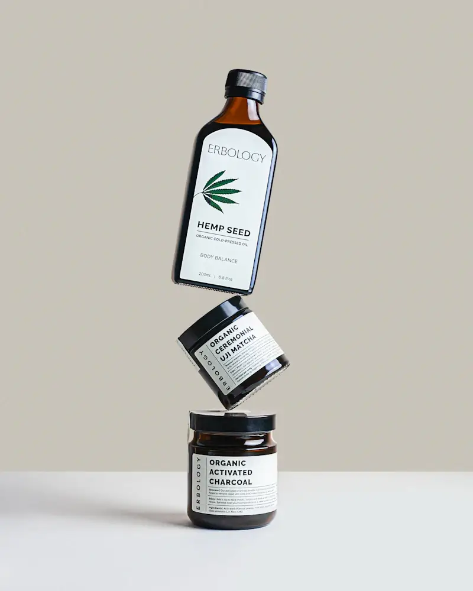

Bőrtípushoz igazodok
Minden bőr egyedi, ezért a kezelések során figyelembe veszem annak aktuális állapotát. Személyre szabott megoldásokkal biztosítom, hogy bőröd a legmegfelelőbb törődést kapja.
A szépség mindenkié
Az Eliza Beauty Salon olyan professzionális kozmetikai megoldásokat kínál, amelyek természetes hatóanyagokkal és a legmodernebb bőrfiatalító technológiákkal érnek el látványos, tartós eredményeket. Nincs fájdalom, nincs kockázat – csak ragyogó, egészséges bőr, amely visszaadja az önbizalmadat. Foglalj időpontot, és tapasztald meg a különbséget!
Megnézem a kezeléseketTERMÉSZETES SZÉPSÉG. SZAKÉRTŐ GONDOSKODÁS.

A minőség mércéje: a visszatérő vendégek
Fruzsi: „Korábbi rossz tapasztalatok miatt sokáig nem mertem kozmetikushoz járni, de ez az itt töltött első alkalmat követően megváltozott. A bőröm minden kezelés után szinte ragyog, remekül érzem magam, és Eliza segítségével sikerült kialakítanom a helyes, bőrtípusomnak megfelelő arcápolási rutint. Szívből ajánlom!”
Magdi: „Eliza nagyon kedves, csupaszív kozmetikus, a kozmetika csodaszép, tiszta, hangulatos, mindig örömmel járok ide vissza. Legutóbb a 10 alkalmas arcfiatalító kezelést vettem igénybe, és az eredmény magáért beszél, azóta több pozitív visszajelzést is kaptam ismerőseimtől. Csak ajánlani tudom Elizát!”
Minden kezelésem a bőröd hosszú távú egészségét és szépségét szolgálja. Nincs varázslat, nincsenek üres ígéretek, csak gondosan kiválasztott hatóanyagok, modern technológiák és bizonyítottan működő eljárások. A célom, hogy bőröd ne csak szebb legyen, hanem tartósan megőrizze rugalmasságát és vitalitását – mindezt elégedettségi garanciával.
Minden bőr egyedi, ezért a kezelések során figyelembe veszem annak aktuális állapotát. Személyre szabott megoldásokkal biztosítom, hogy bőröd a legmegfelelőbb törődést kapja.
Kíméletes, mégis hatékony eljárásokat alkalmazok, amelyek természetes módon segítik a bőr regenerálódását, így az eredmény látványos, a folyamat pedig kellemes és kényelmes.
A célom nem csupán az, hogy jól érezd magad egy kezelés után, hanem az is, hogy valódi, látható eredményeket kapj. Ha egy 5 alkalmas kezelés után nem vagy elégedett, visszatérítem a díj 50%-át.
A kezelések nemcsak a bőrödnek, hanem a lelkednek is szólnak. Nálam nem futószalagon dolgoznak a vendégekkel – minden kezelés privát, nyugodt és egy egészen lélekfeltöltő élmény.

Sipos Eliza vagyok, az Eliza Beauty Salon megálmodója. 14 éve segítek vendégeimnek abban, hogy bőrük egészségesebb, fiatalosabb és ragyogóbb legyen. A szépségipar mindig is a szenvedélyem volt, ezért folyamatosan fejlesztem tudásomat, hogy a legmodernebb technológiákkal és leghatékonyabb hatóanyagokkal dolgozhassak. A Beauty Academy szakmai trénereként és a kozmetikus mesterképzés elvégzése után célom, hogy minden vendégem személyre szabott, professzionális kezelést kapjon. Nálam nincs sablonkezelés, csak valódi törődés és hosszú távú megoldások.
Számok: 14+ év tapasztalat · 1300+ vendég · 350+ féle kozmetikum
Ismerd meg ElizátVendégeimet kizárólag előre egyeztetett időpontban fogadom, hétfőtől péntekig 9:00 és 16:00 között. Telefonon vagy az űrlapon keresztül tudsz bejelentkezni, amire rövid időn belül visszajelzek.
A kezelés előtt alaposan felmérem a bőröd állapotát, megismerem arcápolási szokásaidat, az eddig használt termékeidet, és ezek alapján összeállítom a számodra legmegfelelőbb kezelési tervet.
A személyre szabott terv alapján végzem el a kezelést, amelyet minden esetben egy relaxáló arcmasszázs egészít ki, hogy a bőröd felfrissüljön és a hatóanyagok még jobban beépüljenek.
A kezelést követően segítek az otthoni bőrápolási rutinod kialakításában, hogy a bőröd tartósan egészséges és ragyogó maradjon. Személyre szabott termékajánlásokkal és praktikus tanácsokkal látlak el.
Ha régóta szeretnéd visszanyerni bőröd fiatalosságát, feszességét vagy megszabadulni a makacs bőrproblémáktól, itt az idő, hogy szakértő kezekre bízd magad. A bőröd minden nap érted dolgozik, most rajtad a sor! Válassz professzionális kezeléseket, és élvezd a ragyogó, egészséges bőr érzését – tartósan, természetesen.
Időpontot kérekAMIT JÓ TUDNI
Nem, a kozmetikámban kizárólag időpontra fogadok vendégeket.
Az első találkozás alkalmával a kezelés előtt diagnosztizálom a bőrödet, és felvázolom a kezelési tervet.
Igen, természetesen! Az első alkalmat követően elmondom, hogy mire figyelj a mindennapokban, milyen termékeket használj, hogy a bőröd a lehető legjobb törődést kapja.
Bankkártyával és készpénzzel is fizethetsz a szalonban.
Szeretnéd tudni, hogyan ápold a bőrödet úgy, hogy az hosszú távon egészséges és ragyogó maradjon? Iratkozz fel a hírlevélre, és ajándékba megkapod az Arcápolási Kisokost, amely tele van hasznos tippekkel és szakértői tanácsokkal.
EGY KIS FIGYELEM, CSAK NEKED
Kérdésed van a kezelésekről, vagy időpontot szeretnél egyeztetni? Keress bizalommal, és segítek megtalálni a számodra legjobb megoldást!
+36 20 344 9272 ↗hello.elizabeauty@gmail.com1092 Budapest, Ráday u. 1.
H–P: 9:00–16:00 · Szo–V: zárva
Kizárólag előre egyeztetett időpontban.